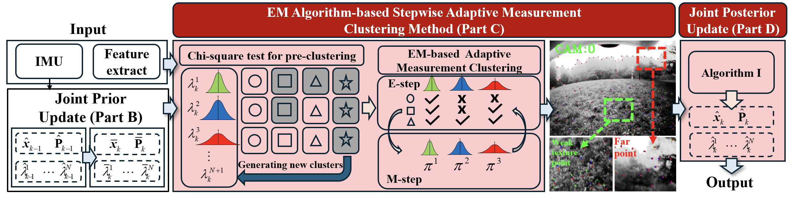
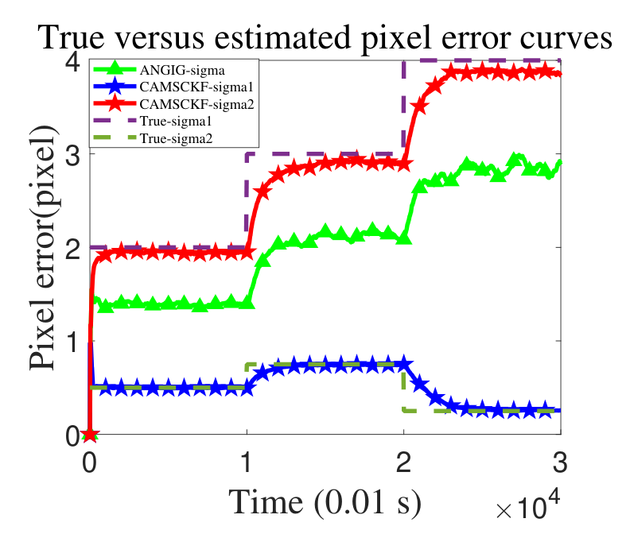
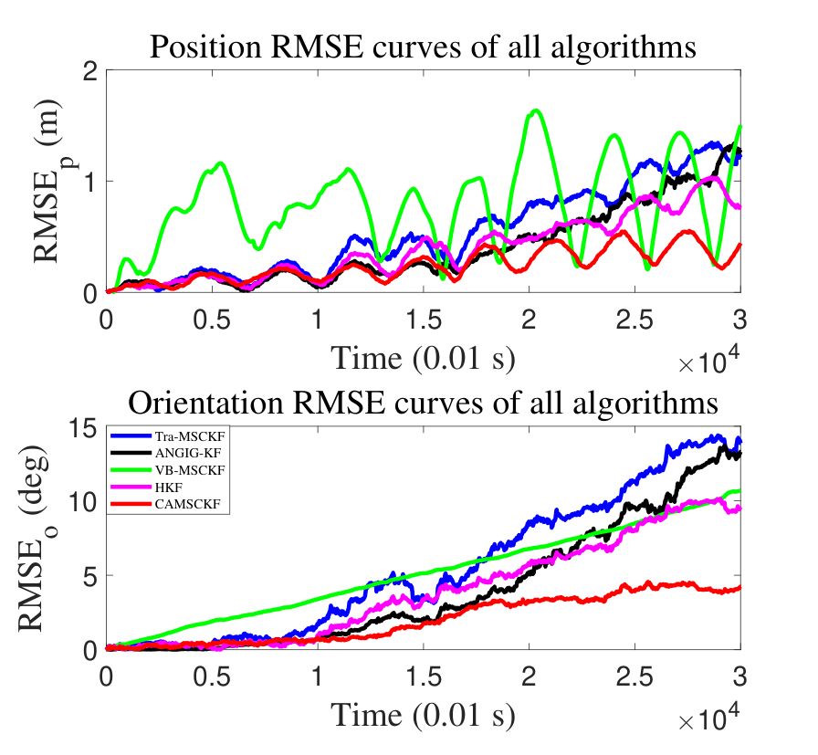
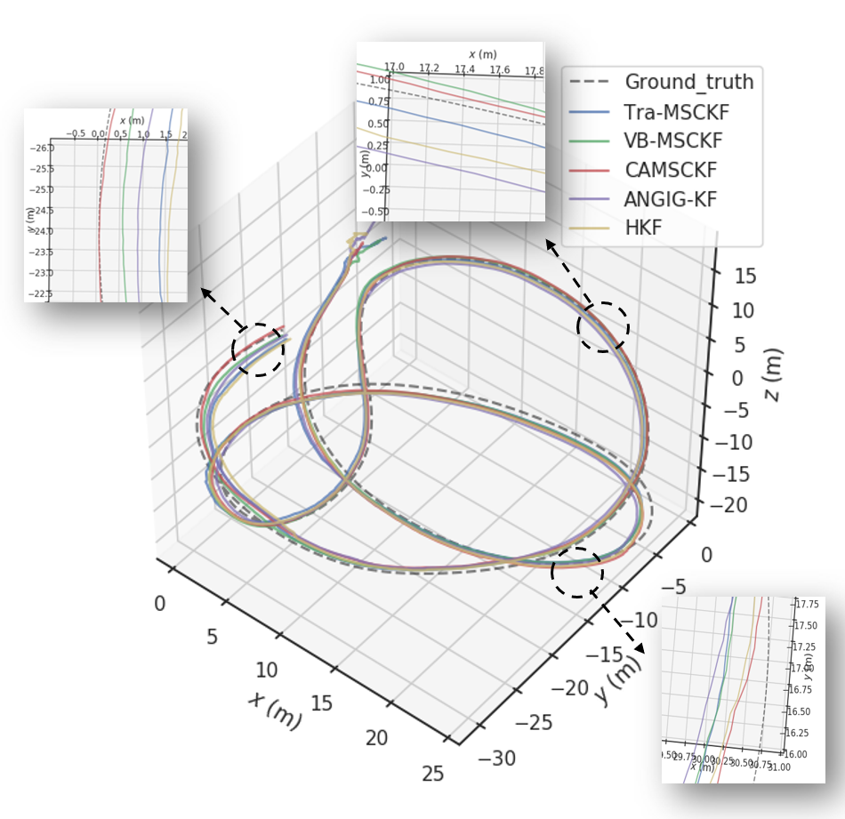
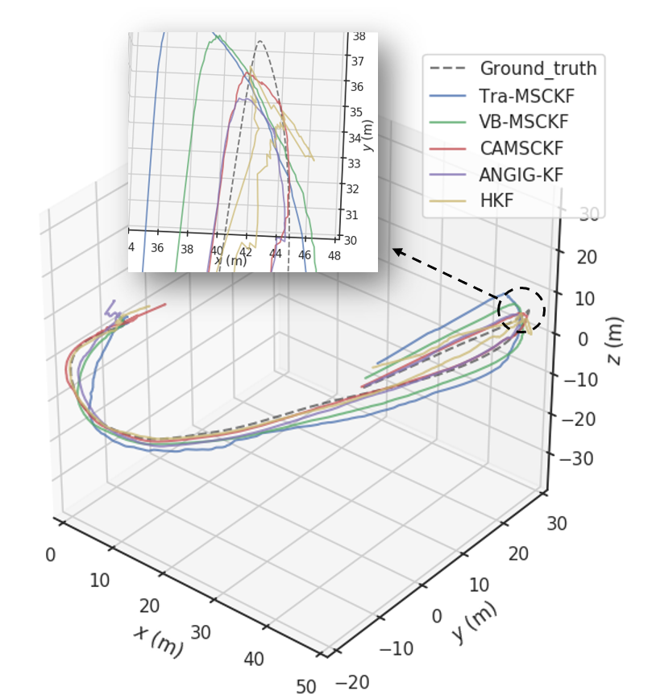
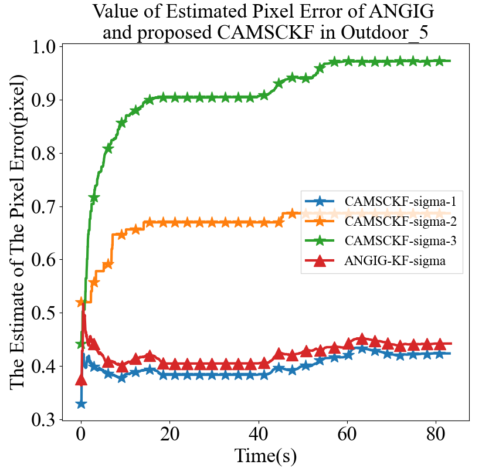

IROS 2025
CAMSCKFA Multi-State Constraint Kalman Filter with Adaptive Multivariate Noise Parameters Clustering and Estimation for Visual-Inertial Odometry
Harbin Engineering University
Video presentation and experimental demonstration
Abstract
Visual-inertial odometry in outdoor environments must handle visual measurements with different noise levels, caused by changes in viewing distance, perspective, illumination, and texture. CAMSCKF augments the Multi-State Constraint Kalman Filter with adaptive measurement clustering and per-cluster noise estimation. It groups measurements using their innovations, models the joint state and noise parameters with a Gaussian–Multivariate Generalized Inverse Gaussian distribution, and updates the state and cluster-specific noise covariances online. Simulations and UZH-FPV outdoor experiments evaluate the method under heterogeneous, time-varying noise and aggressive motion.
Method overview
Adapt the noise model to the measurements, then use that model to improve the visual-inertial state estimate.

Cluster measurements
Chi-square pre-clustering and an EM-based stepwise procedure group measurements according to their innovations.
Track distinct noise levels
A joint state and noise model estimates separate covariance coefficients for different measurement clusters.
Update the state
An analytical joint posterior update couples the visual-inertial state estimate with online noise adaptation.
Simulation
We simulate a robot moving in a circle in the x–y plane while oscillating vertically, with randomly generated visual feature points. The IMU runs at 100 Hz and the camera at 10 Hz. Each run lasts 300 seconds (30,000 steps), and all methods are evaluated over 50 Monte Carlo runs.
Visual measurements have two distinct, time-varying Gaussian noise variances, with a nominal noise model that does not match the actual noise. CAMSCKF is compared with Tra-MSCKF, VB-MSCKF, HKF, and ANGIG-KF using position and orientation RMSE.


The noise estimates track the two changing noise levels separately. In this simulation, CAMSCKF reduces position and orientation errors relative to the comparison methods when measurement noise is heterogeneous and the nominal model is mismatched.
Experiments
Evaluation on four UZH-FPV outdoor sequences, using a shared KLT front end, RANSAC outlier rejection, and Sim(3) trajectory alignment.
| Method | ATE (m) | AOE (°) |
|---|---|---|
| Tra-MSCKF | 1.914 | 4.138 |
| VB-MSCKF | 1.458 | 2.971 |
| HKF | 1.347 | 2.980 |
| ANGIG-KF | 1.457 | 2.578 |
| CAMSCKF (ours) | 0.978 | 1.658 |
ATE: Absolute Trajectory Error. AOE: Absolute Orientation Error. Runtime is the value reported in the paper’s evaluation setting.

Trajectory comparison from Fig. 5(a).

Trajectory comparison from Fig. 5(c).

Different features, different uncertainty
The estimated standard deviations illustrate how CAMSCKF tracks distinct measurement noise levels over time. This allows separate adaptation for measurement clusters with different noise characteristics.
The plot shows representative cluster estimates on the challenging Outdoor forward 5 sequence.
BibTeX
@inproceedings{tang2025camsckf,
author = {Tang, Yiyang and Zhang, Hanxuan and Yu, Yichen and
Li, Xiaofeng and Huang, Yulong},
title = {{CAMSCKF}: A Multi-State Constraint Kalman Filter
with Adaptive Multivariate Noise Parameters
Clustering and Estimation for Visual-Inertial Odometry},
booktitle = {2025 IEEE/RSJ International Conference on
Intelligent Robots and Systems (IROS)},
year = {2025},
pages = {15173--15180},
doi = {10.1109/IROS60139.2025.11246963}
}